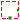
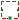

Interfaces for 1-dim. translational mechanical components
Extends from Modelica.Icons.Package (Icon for standard packages).
| Name | Description |
|---|---|
|  PartialElementaryOneFlangeAndSupport | Obsolete partial model. Use PartialElementaryOneFlangeAndSupport2. |
|  PartialElementaryTwoFlangesAndSupport | Obsolete partial model. Use PartialElementaryTwoFlangesAndSupport2. |
Obsolete partial model. Use PartialElementaryOneFlangeAndSupport2.
This is a 1-dim. translational component with one flange and a support/housing. It is used to build up elementary components of a drive train with equations in the text layer.
If useSupport=true, the support connector is conditionally enabled
and needs to be connected.
If useSupport=false, the support connector is conditionally disabled
and instead the component is internally fixed to ground.
Extends from Modelica.Icons.ObsoleteModel (Icon for classes that are obsolete and will be removed in later versions).
| Name | Description |
|---|---|
| useSupport | = true, if support flange enabled, otherwise implicitly grounded |
| Name | Description |
|---|---|
| flange | Flange of component |
| support | Support/housing of component |
Obsolete partial model. Use PartialElementaryTwoFlangesAndSupport2.
This is a 1-dim. translational component with two flanges and an additional support. It is used e.g., to build up elementary ideal gear components. The component contains the force balance, i.e., the sum of the forces of the connectors is zero (therefore, components that are based on PartialGear cannot have a mass). The support connector needs to be connected to avoid the unphysical behavior that the support force is required to be zero (= the default value, if the connector is not connected).
Extends from Modelica.Icons.ObsoleteModel (Icon for classes that are obsolete and will be removed in later versions), Modelica.Mechanics.Translational.Interfaces.PartialTwoFlanges (Component with two translational 1D flanges).
| Name | Description |
|---|---|
| useSupport | = true, if support flange enabled, otherwise implicitly grounded |
| Name | Description |
|---|---|
| flange_a | (left) driving flange (flange axis directed into cut plane, e. g. from left to right) |
| flange_b | (right) driven flange (flange axis directed out of cut plane) |
| support | Support/housing of component |